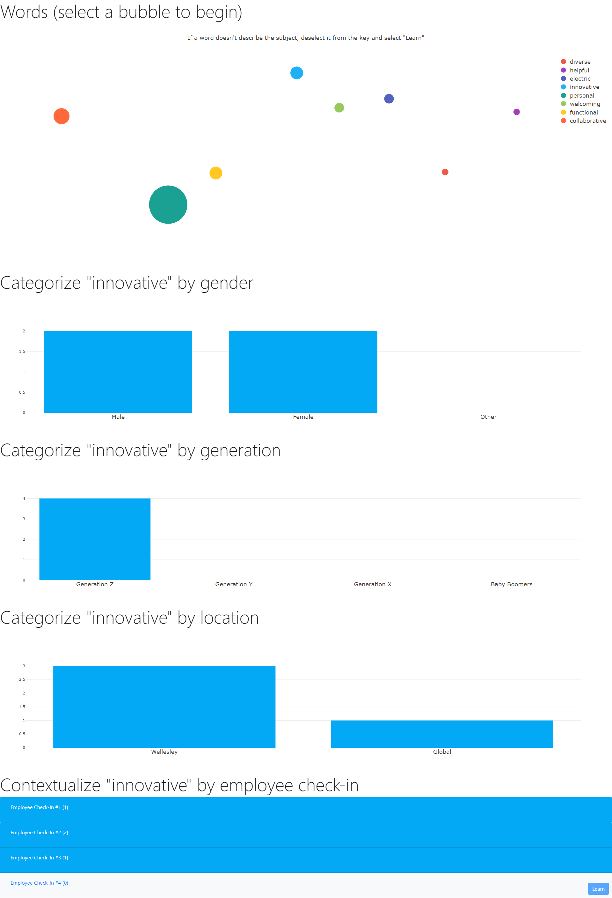

Featured Project
K-Means Group Culture
k_means_group_culture leverages the K-Means Natural Language Processing algorithm to convert recorded employee check-ins as WAV audio files to comprehensive insights into group culture via an interactive dashboard. View the source code on the GitHub Repository!
